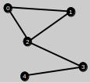

netAnalyzer is a program that allows you to analyze a small social or similar network.
In the main panel the network can be visually inspected. One can also drag and drop nodes to different locations. Nodes are colored according to the tasks that are done. The links are generally black. The only exception is when doing link prediction, predicted links are shown in red. Besides manually moving the nodes, one can also choose from a variety of layouts to automatically place the nodes. Look under the tab for Layouts for more information.
The data is read in from files. You can create and change these files using your favorite editor. The program saves and loads networks using its own file format. Networks can be imported, though using formats described under the File tab.
A loaded network can be analyzed using several different metrics and algorithms. These are in the tabbed box on the far left of the window. Under the tabs, one can calculate a number of different metrics or they can find communities, influential nodes or predict nodes or links. Click on the Tasks tab for more information.
One can also have the netAnalizer randomly generate a network. The user enters the desired parameters and the system generates a network based on the parameters entered. For more information, click on the Generate tab.
You can save and open files using the file menu. If you make changes to a network you can choose to do a save (which saves it under the same name as it was opened under) or save as (where you can save a new copy under a new name). You can choose any extension but it is best to stick with something like "txt" or "net".
A saved file can later be opened using the open menu item. Networks are saved in a format that is particular to the netAnalyzer. They are text files so you can inspect them and even change them but if you do change them, it is likely that the netAnalyzer will not be able to read in the data correctly. To create a new network, you first need to import the graph (see below) and perhaps import the attributes. Once you done that, you can save the network and it will remember the nodes, links and their placement on the canvas.
You can import a graph using one of three formats. The formats are described below. You can sometimes obtain files already in one of these formats, create these files in an editor or convert them using a programming language or spreadsheet. Examples of the formats are distributed with the software to help you correctly format a new file.
Attributes are properties of a node. For example, if the network you are working on is a social network of people, the attributes could contain information like, age, phone number, monthly salary, etc. The attributes are displayed in the Node Properties box when a node is selected on the canvas. The attributes can also be used for node prediction, which is discussed under the section on tasks.
|
The formats for the graph and attribute files follow below. In all cases, the delimiters are newline and space. A new line is used to separate node information (for adjacency matrices and lists and for attributes) or edges (for edge lists). Spaces separate items on the same line. The formats below are represented by tables but really they are values separated by spaces. All examples represent the graph to the right. |  |
|
adjacency matrix: An adjacency matrix is an n by n
matrix of ones and zeros, where n is the number of nodes in the
network. The matrix to the right is the adjacency matrix for the
network above. Each row and column represent a node. If there is a
link between nodes i and j then a 1 is placed in the cell at the intersection of the ith and jth column. Notice that node 0 is linked to both nodes 1 and 2 and that there are 1's in the column 1 and 2 of row 0. |
|
|
adjacency list: Unlike an adjacency matrix, an adjacency
list does not have an entry for each potential link. Instead it stores
only the actual links that a node has. The list is n lines long
with a list of nodes on each line. The first line lists all of the
links for the first node and so on. The list to the right is the
adjacency list for the network above. Notice that node 2 is connected
to nodes 0, 1 and 3 which are the numbers on the line for node 2. |
|
|
edge list: An edge list simply lists each edge on a
separate line of the file. The table to the right is only a partial
representation of the edge list for the network. It only lists the
first three links, from 0 to 1, from 0 to 2 and from 1 to 2. |
| ||||||||
|
attributes: The layout for the attribute file is the
traditional table layout, like a spreadsheet. Each line represents a
different node, with different attribute values separated by spaces.
The first line is reserved for the descriptions of the attributes. For
the network on this page, each node has an id, name, age and height. So
node 0 is really Jill who is 26 years old, 164 cm. tall and has an id
of 1. |
|
The main window for netAnalyzer is separated into several function areas or elements. Each is described below.
The menu bar has important tasks that are not done as often as some of the other elements. Under file, you can open or save a network. Import allows you to import a graph from a text file (see the Files tab for more information). Edit allows you to select all of the data in the results box and copy it to the clipboard. On the left side is the task box that allows you to do a number of helpful tasks (see Tasks tab). The layout has several different methods to automatically rearrange the placement of the nodes. Finally the generate menu allows you to generate random synthetic networks.
See the Task tab for more information about doing the various tasks.
The network canvas takes up the center of the window and is where the network is placed. One can have the nodes automatically rearranged (see layouts) or can move them manually. To move a node, move the mouse pointer to the center of the node and right-click. With the button down, drag to the location you want to move it to and release the button. Also when you click on a node it will display information about the node in the node properties box.
Information about a node is displayed in the node properties box whenever a node is selected on the canvas or when it is selected in the nodes box.
This box displays a list of the nodes in the network along with the name of the node if it is present in the attributes. One can scroll through the box and select a node. That causes that nodes properties to be displayed in the node properties box and highlights the node in the network drawing on the canvas.
The results box lists the results of the more recently completed task. For instance, if you chose to calculate statistics these would show up in the results box. If you chose to find communities the community assignments will be display in the results box (and so on).
There are 5 tasks that one can choose to apply to a network. These will provide you with information to help understand and analyze the network. All of the tasks will update the Results box with the results of the task. It may also update the network visual display by changing colors of nodes or links.
There are a number of metrics that you can choose to calculate for the network. Check the ones that you are interested in and press calculate. The results will be placed in the results box where you can copy and paste them into another application if you wish.
Communities in networks are groups of nodes that are tightly linked. A set of good communities are ones where there are many links within the communities and few between them. This uses the CHI algorithm by Scripps and Trefftz. Parameters include k, λ1, λ2, λ3. Enter the number of communities you wish to find in the box labeled k.
The λ values control the kinds of communities the algorithm finds. There are three types of violations that the algorithm tries to minimize: missing neighbors (Emn: links between communities), extraneous nodes (Een: non-links within communities) and overlap (Eolnodes placed in multiple communities). λ1 applies to Emn, λ2 applies to Een, λ3 applies to Eol. A higher λ value results in a lower value of the corresponding violation.
The algorithm produces both disjoint and overlapping community assignments. The nodes will be recolored to correspond to the disjoint community assignments. In the results box, the disjoint assignments will be listed followed by a binary matrix of the overlapping assignments. Each row in the matrix represents a node and the columns are the communities (ones mark the community to which the node is assigned).
Influential nodes are those nodes that are positioned well in the network to apply their influence to many other nodes. For example, in a social network, an influential node is a person who is capable of convincing others to adopt an idea or new product. The algorithm in the netAnalyzer is the brute-force approach of Kempe, et al., 2005. This assumes a linear thresholds model with a fixed probability of activation. User needs to enter the number of influential nodes to select, the activation probability and the number of iterations. Increasing the number of iterations will result in a more accurate result but will linearly slow down the calculation.
The results box lists the nodes with the most influence. Also, the nodes in the canvas are all changed to black with the influential ones painted red.
Node prediction or link-based classification is the process of predicting the class of a node given labeled instances, the graph and attributes. As an example, given a social network with some demographic attributes and a class, in this case, political stance, the system can predict the political stance of nodes that are not labeled (political stance is unknown). The class can be inferred by instances that are similar to it and also to others that it is linked to.
To be able to use this, you must first supply attributes and second, name one of the attributes "class" (the one you wish to predict). The algorithm is based on the logistic regression model of Lu and Getoor. There are only two parameters, a coefficient for data and another for links. This way you can weight the attributes and links. Say that you think that the attributes contain more predictive information. Then you can enter numbers like 2 for data coef and 1 for link coef. At this point in time, the algorithm only allows 2 classes: 1 and -1.
When you run this algorithm, the nodes in the canvas will be painted according to their class. The predicted nodes will then be painted with the color of the class that it predicts for them and highlighted. The results box will also display the results of the predictions.
Link prediction is the process of predicting which currently not-linked node pairs will become linked next. This algorithm based on the paper by Liben-Nowell and Kleinberg, simply computes similarity metrics for all non-linked node pairs and chooses the pairs with the optimum values. At this time the only metrics implemented are common-neighbors and Jaccard. To run the algorithm, enter the number of links you want to predict and which metric to use. The results box will list the node pairs chosen and the predicted links will be displayed in red on the canvas.
Choosing a layout can help to organize the nodes into a pattern to make it easier to distinguish the structure of the network. Choosing one of the options will reorganize the nodes and redraw the network.
This option, simply chooses a random position for each node.
Places the nodes into a circle in the order that the nodes are originally read in.
Each community is organized into a circle and those circles are arranged in a larger circle.
Force-based algorithm that iteratively moves nodes until they settle into an arrangement that places nodes close to their neighbors. This algorithm is stochastic so a different pattern will emerge after each run.
Based on the graphs by Erdos and Renyi. Enter the number of nodes in the network and the probability that any two nodes will become linked.
Small world networks were first identified by Watts and Strogatz. To build a small world graph, you start with a regular graph and rewire the links. A regular graph is one where each node has an identical degree. For this algorithm, enter the number of nodes, the probability of rewiring and the number of neighbors. First the algorithm builds a regular graph using the number of neighbors entered. Then it rewires each link with the probability entered.
Barabasi and his associates proposed the scale-free model of network formation. Scale-free networks have a degree distribution that follows a power law curve. The principle of preferential attachment guides the algorithm. This means that nodes will link to others based on a probability proportional to their degree. Enter the number of nodes in the network, the probability and the number of links. The links will be added based on preferential attachment weighted by the probability. Probability can be between 0 and 1, with 0 meaning the links will be placed completely randomly and 1 means that the process is completely governed by preferential attachment.